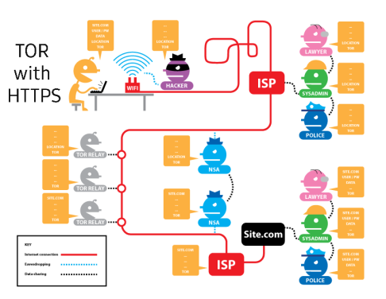
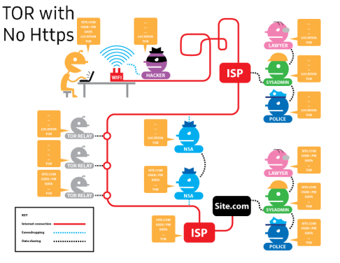
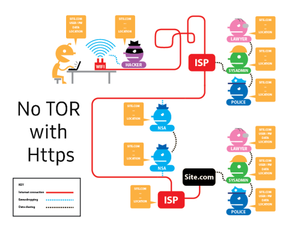
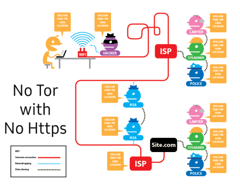

The Tor Project
Before proceeding, it is crucial to recognise the difference between Anonymity and Pseudonymity. TOR (Previously referred as "The Onion Router".) is a free and an open-source software enabling Anonymous network communcations. This can be differentiated from our typical web browers as only our IP address and DNS requests are protected, providing such limited protection when using normal browsers. However Onion routing is implemented by encryption in the application layer of a communication protocol stack, nested like the layers of an onion.
Each relay decrypts a layer of encryption to reveal the next relay in the circuit to pass the remaining encrypted data on to it.
The final relay decrypts the innermost layer of encryption and sends the original data to its destination without revealing or knowing the source IP address. Because the routing of the communication was partly concealed at every hop in the Tor circuit, this method eliminates any single point at which the communicating peers can be determined through network surveillance that relies upon knowing its source and destination.
Essentially, Onion Routing in a nutshell directs internet traffic through many nodes where each relay is able to simultaneously decrypt a layer of encryption and encrypt the message which only the next relay could decrypt a layer of. this process is repeated until the message reaches it's final destination and the response returns to the user.
Functionality
(The software package, Tor bundle is available at the download section of the official page. (Tor supports many platforms including: Windows, Mac OS, Linux, and Android.)
The following list are some of Tor's functionalities
- Different options to connect to Tor (as of configuring a proxy or bridge)
- Default search engline powered by DuckDuckGo
- Optional Security configurations (such as enabling & disabling Javascript, Cookies, and other scripts in general.)
- Add ons and default extensions (Noscript and Https-Everywhere as an example.)
- Identity shift features(Changes your Tor identity and and connects to another node)
"Explore Freely, Browse Privately"




Keywords and Definitions
| Keywords | Definition | Source |
|---|---|---|
| Anonymity | The conditions of not being able to be identified or specified | Oxford's Dictionary |
| Pseudonymity | A word derived from pseudonym, meaning "False name.", a state of disguised identity. | Oxford's Dictionary |
| Encryption | The process of encoding a message or information in such a way that only authorized parties can access it and those who are not authorized cannot. | Wikipedia, The Free Encyclopedia. |
| Nodes/Relays | Broad class of network topology commonly used in wireless networks, where the source and destination are interconnected by means of some nodes. | Eff.Org |
| Protocols | Set of laws or procedures for transmitting data between one device to another. | Britannica |
| Proxy (Application-Level gateaway) | A server application or appliance that acts as an intermediary for requests from clients seeking resources from servers that provide those resources. | IU Knowledge Base |
| Bridge | a computer networking device that creates a single aggregate network from multiple communication networks or network segments. | Wikipedia, The Free Encyclopedia. |